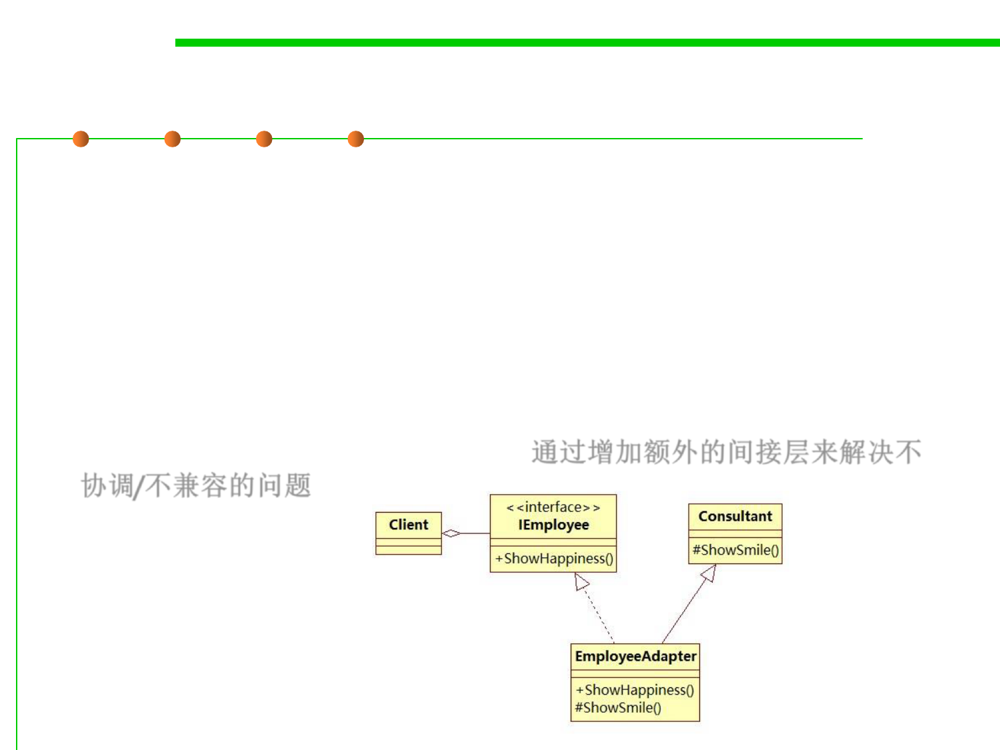

Example
5.3 Design Patterns for Reuse
▪ An organization tree that is constructed where all the employees
implements the IEmployee interface. The IEmployee interface has a
method named ShowHappiness().
▪ We need to plug an existing Consultant class into the organization
tree. The Consultant class is the adaptee which has a method named
ShowSmile().
▪ This incongruity can be reconciled by adding an additional level of
indirection – i.e. an Adapter object. 通过增加额外的间接层来解决不
协调/不兼容的问题